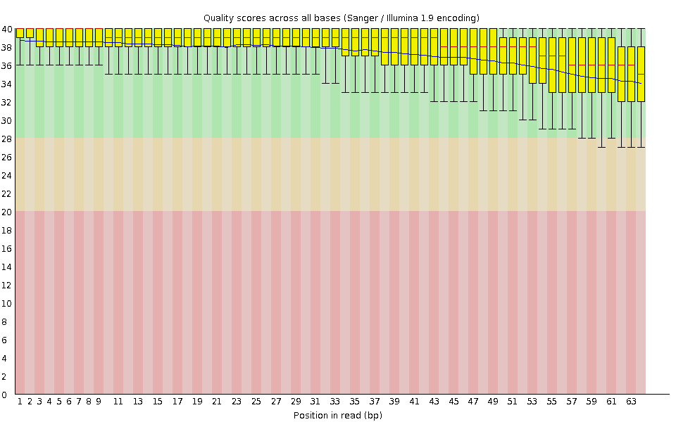
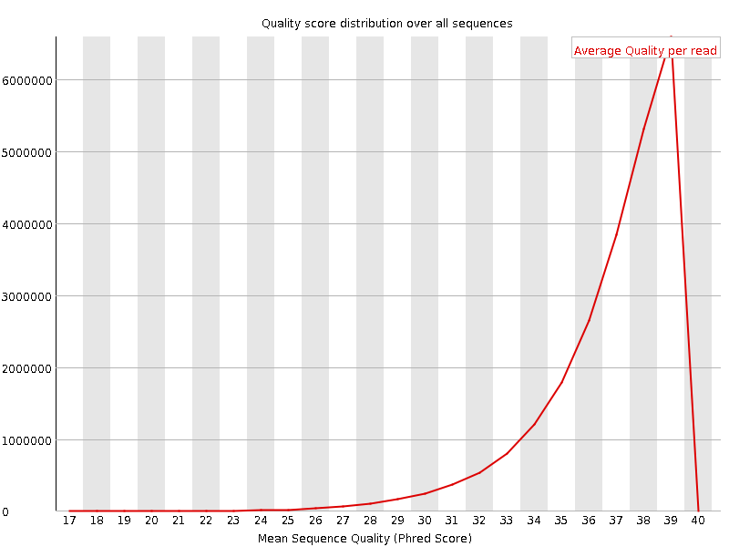
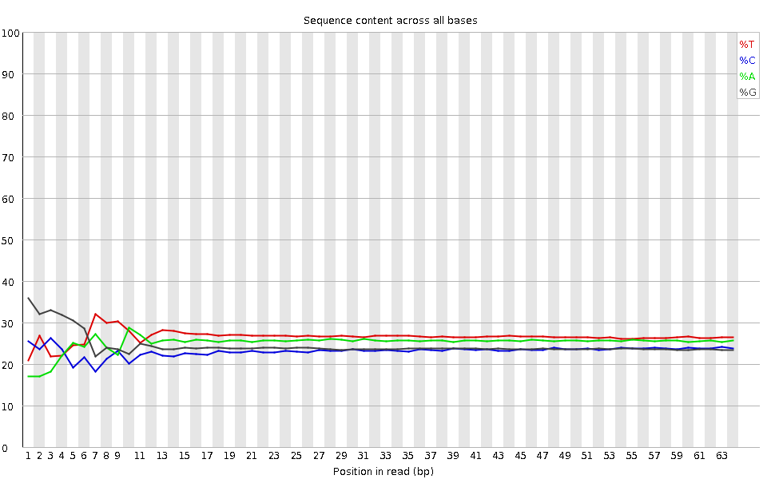
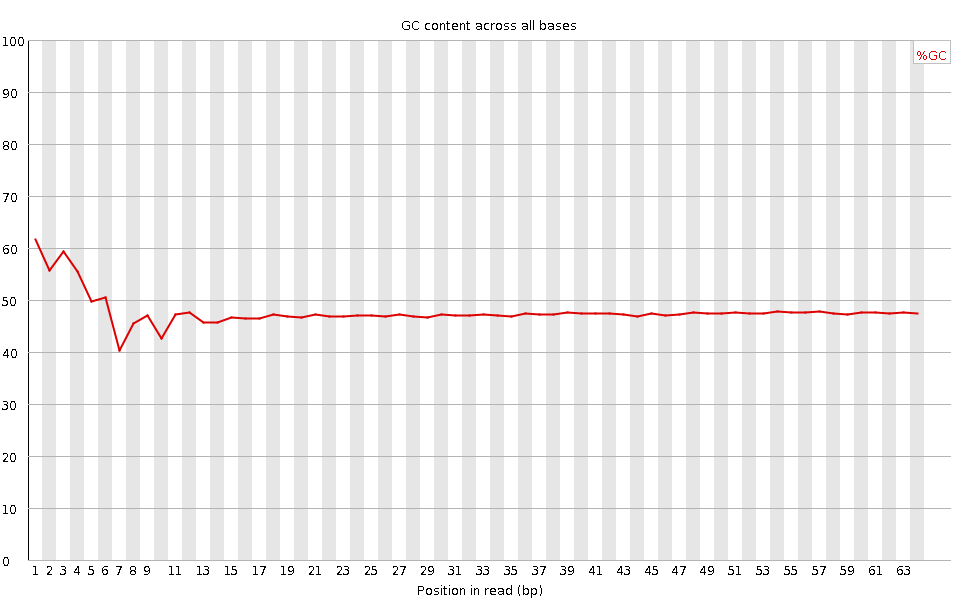
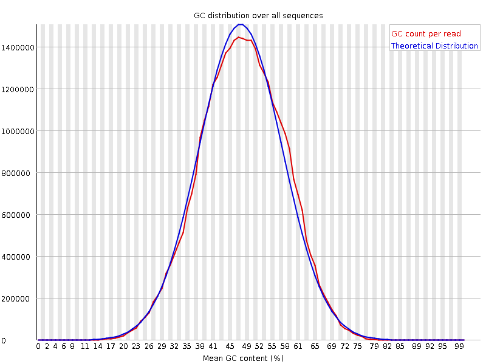
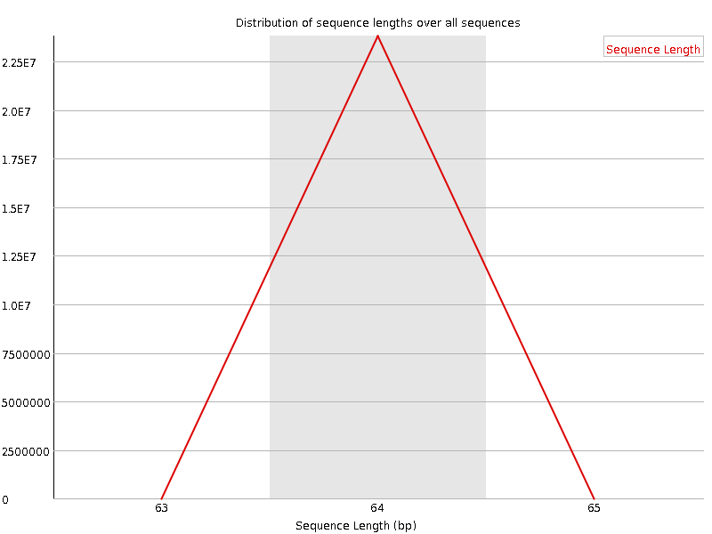

![[OK]](Icons/tick.png) Basic Statistics
Basic Statistics
| Measure | Value |
|---|---|
| Filename | SRR307902_pe_1.f.fastq |
| File type | Conventional base calls |
| Encoding | Sanger / Illumina 1.9 |
| Total Sequences | 23807227 |
| Filtered Sequences | 0 |
| Sequence length | 64 |
| %GC | 47 |
Per base sequence quality

Per sequence quality scores

![[WARN]](Icons/warning.png) Per base sequence content
Per base sequence content

![[FAIL]](Icons/error.png) Per base GC content
Per base GC content

Per sequence GC content

Per base N content

Sequence Length Distribution

Sequence Duplication Levels

Overrepresented sequences
No overrepresented sequences
Kmer Content

| Sequence | Count | Obs/Exp Overall | Obs/Exp Max | Max Obs/Exp Position |
|---|---|---|---|---|
| CTGGG | 2835515 | 2.1377046 | 6.6392517 | 1 |
| GGCAG | 2635585 | 2.0958202 | 5.7516894 | 1 |
| GCTGG | 2592805 | 1.9547248 | 5.728461 | 1 |
| GGGCA | 2382315 | 1.8944196 | 5.4389367 | 1 |
| TGGGG | 2542270 | 1.8145685 | 6.525329 | 1 |
| GGGGG | 2262175 | 1.7543992 | 9.423697 | 2 |
| GGGAG | 2316625 | 1.7440886 | 5.1560955 | 1 |
| GGGGA | 2272810 | 1.7111022 | 7.1242156 | 1 |
| GTGGG | 2226920 | 1.5894846 | 6.8983393 | 1 |
| GGGTG | 2192845 | 1.565163 | 5.1444182 | 2 |
| GGGGT | 2184985 | 1.5595529 | 7.6469283 | 3 |
| GGGGC | 1830150 | 1.4991775 | 5.711643 | 2 |
| CGGGG | 1236835 | 1.0131602 | 8.566729 | 1 |
| GCGGG | 745530 | 0.610705 | 5.319678 | 1 |